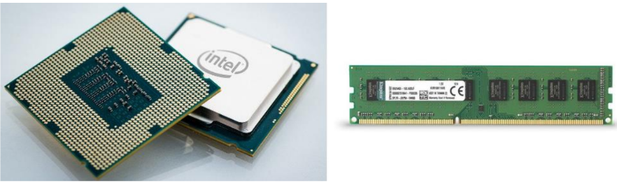
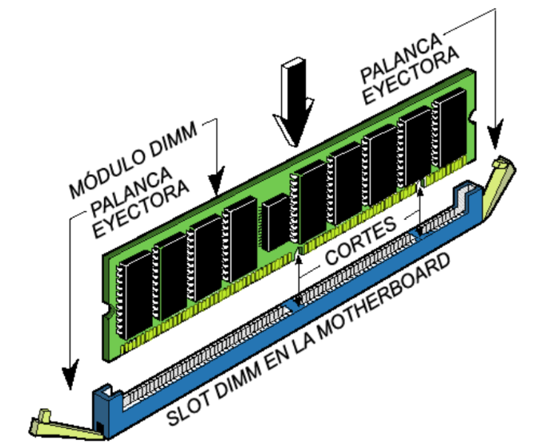
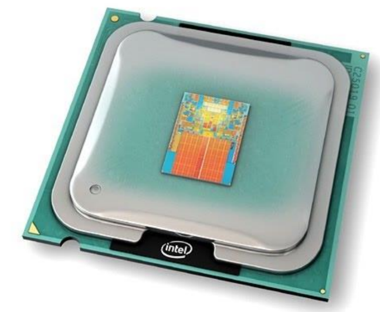
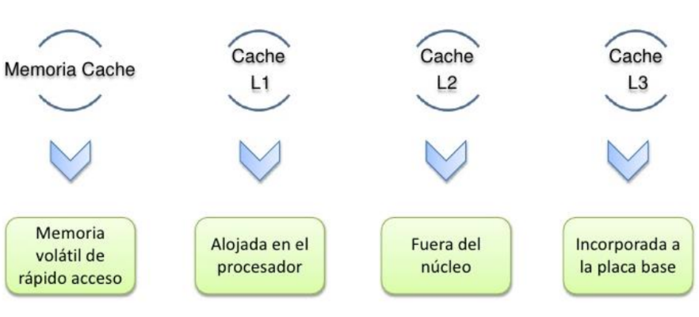

Es un dispositivo que puede mantenerse en por lo menos dos
estados estables por un cierto periodo de tiempo.
Cada uno de estos estados estables puede utilizarse para
representar un bit.
A un dispositivo con la capacidad de almacenar por lo menos
un bit se le conoce como celda básica de memoria.
Un dispositivo de memoria completo se forma con varias
celdas básicas y los circuitos asociados para poder leer y
escribir dichas celdas básicas, agrupadas como localidades
de memoria que permitan almacenar un grupo de N bits.

El número de bits que puede almacenar cada localidad de
memoria es conocido como el ancho de palabra de la
memoria. Coincide con el ancho del bus de datos.
Uno de los circuitos auxiliares que integran la memoria es el
decodificador de direcciones. Su función es la de activar a
las celdas básicas que van a ser leídas o escritas a partir de la
dirección presente en el bus de direcciones. Tiene como
entradas las N líneas del bus de direcciones y 2N líneas de
habilitación de localidad, cada una correspondiente a una
combinación binaria distinta de los bits de direcciones.
Por lo tanto, el número de localidades de memoria
disponibles en un dispositivo (T) se relaciona con el número
de líneas de dirección N por T= 2N.
Conceptos básicos del manejo de la memoria.
Se produce bajo el control directo y continuo del programa
que solicita la operación de E/S. tanto en la entrada y salida
programada como con interrupciones, el procesador es
responsable de extraer los datos de la memoria en una salida,
y almacenar los datos en la memoria principal. El problema
con la E/S es que el procesador tiene que esperar un tiempo
considerable hasta que el modulo en cuestión esté preparado
para recibir o transmitir datos.
Memoria principal Semiconductora.
La memoria del semiconductor utiliza en su arquitectura
circuitos integrados basados en semiconductores para
almacenar información.
Un chip de memoria de semiconductor puede contener
millones de minúsculos transistores o condensadores.
Existen memorias de semiconductor de ambos
tipos: volátiles y no volátiles.
En las computadoras modernas, la memoria principal
consiste casi exclusivamente en memoria de semiconductor
volátil y dinámica, también conocida como memoria
dinámica de acceso aleatorio o más comúnmente RAM
(Random Access Memory).

Con el cambio de siglo, ha habido un crecimiento constante
en el uso de un nuevo tipo de memoria de semiconductor no
volátil llamado memoria flash.
Dicho crecimiento se ha dado, principalmente en el campo
de las memorias fuera de línea en computadoras
principalmente de escritorio.
Las memorias de semiconductor no volátiles se están usando
también como memorias secundarias en varios dispositivos
de electrónica avanzada y computadoras especializadas y no
especializadas.
Memoria Caché.
Dentro de nuestro procesador no sólo se encuentran los
componentes que hacen posible sus enormes capacidades de
computación, también hay una pequeña memoria que se
encarga de conseguir que el trabajo de nuestro
procesador pueda realizarse a la velocidad que este opera.
Es la memoria de acceso rápido de una computadora, que
guarda temporalmente las últimas informaciones procesadas.
La memoria caché es un búfer especial de memoria que
poseen las computadoras, que funciona de manera similar a
la memoria principal, pero es de menor tamaño y de acceso
más rápido. Es usada por el procesador para reducir el
tiempo de acceso a datos ubicados en la memoria principal
que se utilizan con más frecuencia.
La caché es una memoria que se sitúa entre la unidad central
de procesamiento (CPU) y la memoria de acceso
aleatorio (RAM) para acelerar el intercambio de datos.
Cuando se accede por primera vez a un dato, se hace una
copia en la caché; los accesos siguientes se realizan a dicha
copia, haciendo que sea menor el tiempo de acceso medio al
dato.
Cuando el procesador necesita leer o escribir en una
ubicación en memoria principal, primero verifica si una
copia de los datos está en la memoria caché; si es así, el
procesador de inmediato lee o escribe en la memoria caché,
que es mucho más rápido que de la lectura o la escritura a la
memoria principal.

Memoria caché nivel 1 ( L1).
También llamada memoria interna, se encuentra en el núcleo
del procesador. Es utilizada para almacenar y acceder a datos
e instrucciones importantes y de uso frecuente, agilizando
los procesos al ser el nivel que ofrece un tiempo de respuesta
menor. Se divide en dos subniveles:
* Nivel 1 Data caché: se encarga de almacenar datos usados
frecuentemente.
* Nivel 1 Instruction caché: se encarga de almacenar
instrucciones usadas frecuentemente.
Memoria caché nivel 2 (L2).
Se encarga de almacenar datos de uso frecuente, es mayor
que la caché L1, pero a costa de ser más lenta, aun así es más
rápida que la memoria principal (RAM).
Puede ser inclusiva y contener una copia del nivel 1 además
de información extra, o exclusiva y que su contenido sea
totalmente diferente de la cache L1, proporcionando así
mayor capacidad total.

Memoria caché nivel 3 ( L3).
Es más rápida que la memoria principal (RAM), pero más
lenta que L2, ayuda a que el sistema guarde gran cantidad de
información agilizando las tareas del procesador.
En esta memoria se agiliza el acceso a datos e instrucciones
que no fueron localizadas en L1 o L2.
Al igual que la L2, puede ser inclusiva y contener una copia
de L2 además de información extra o, por el contrario, ser
exclusiva y contener información totalmente diferente a la de
los niveles anteriores, consiguiendo así una mayor capacidad
total.